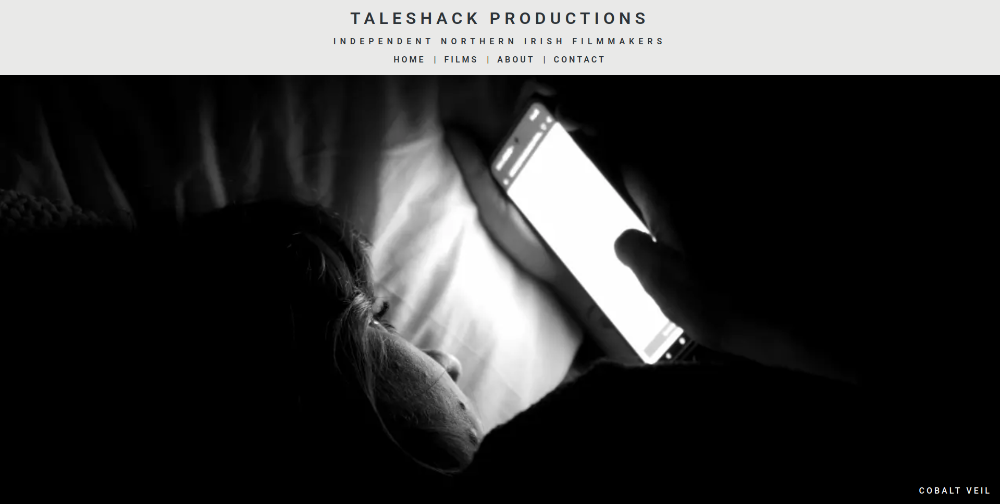

MurrMan
MurrMan's Projects
This page is going to focus on my web projects. As of now, one of them is under construction and the other one is more of a personal journal. I'll upload videos of functionality at some point though! Like all things, I'm taking these one step at a time and hope to add more features as I go along.
Taleshack Productions
 https://taleshackproductions.comTech:
- - NextJS
- - Supabase (Auth, PostgreSQL DB)
- - AWS S3
Portfolio site for Taleshack Productions, my film company! Look! I'm a director of this thing! We have big plans for shorts, TV and feature length films in the future. I made this site so me and my two friends Ethan and Jonny can upload our work you you all to see! It features authenticated uploads to an S3 bucket with Supabase metadata for CRUD operations on the uploaded film and screenshot files. Have a look and watch our films - that's what we made them for :)
Fillums
https://fillums.vercel.appTech:
- - RedwoodJS
- - Tailwind CSS
- - Auth (for one user - me)
- - PostgreSQL with a GraphQL API
You're going to click that and be hit with a login page. I am the only user and I pulled the sign-up ladder out of the app. As you can see in the webm though - it's a film journal! I just record the films I watch because I'm a film guy. I intend to add more features like pagination, charts and data insights in due time.